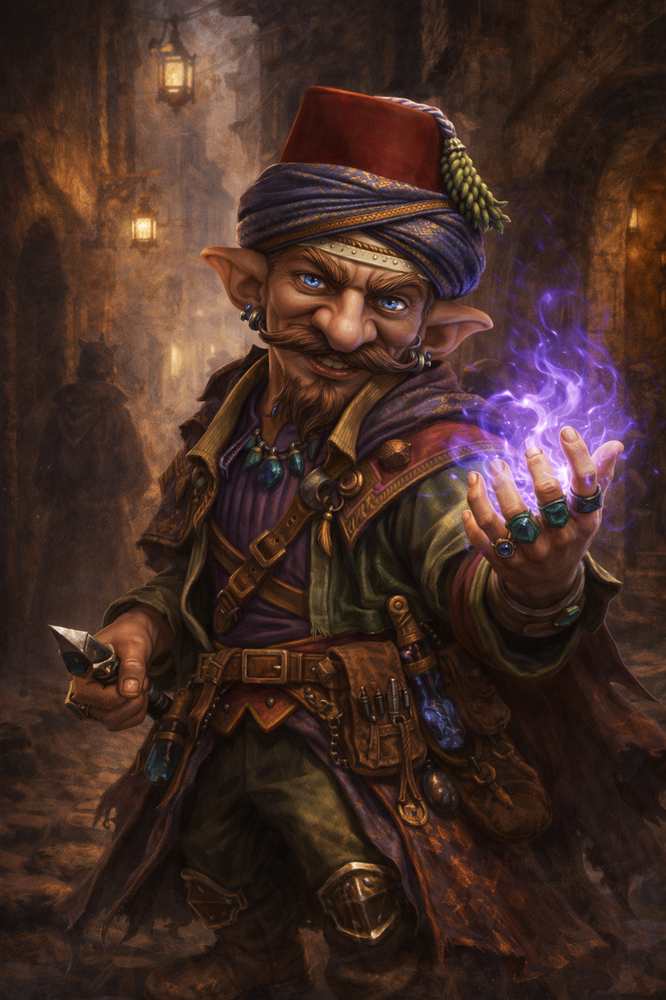

Schmeigel

Od mala žil se svým strýcem Orrynem, který byl starý šarlatán a v mládí ho naučil jeho umu. Kvůli jeho podvodným plánům a lživosti nebyl viděn v jeho komunitě pozitivně, ale potom, co okradl starostovy vzdálené příbuzné, co přijeli na návštěvu byl starostou vsi Valrugem vyhoštěn. Jeho ambice ho však zavedly do města, o kterém často slýchával. Tam ihned zapadl mezi ostatní šmelíře, švindlíře, podvodníky a podfukáře. Trávil svůj čas poblíž krčem a hospod, kde vyhlížel pro procházející poutníky, které by mohl obrat o vše, co by unesl. Často se dostával do problémů s lokálními autoritami a zákonem, ale nikdy nebyl lapen, jelikož zná všechny temné uličky jako své boty. Tvrdí, že mu nevadí, že ho byl vyhoštěn, ale touží po místě, kam by zapadl.